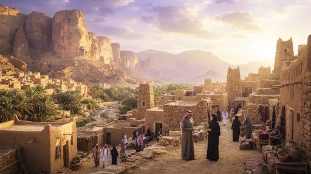
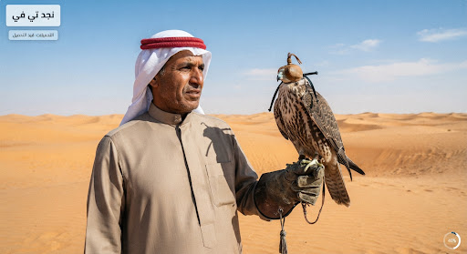

 ح 4 أصداء طويق 65% الموسم 1 · الحلقة 4 420 ميجابايت من 650 ميجابايت متبقي 45 ث pause إيقاف مؤقت close
 error وثائقي صقر الجزيرة فيلم وثائقي infoتعذر إكمال التحميل. حاول مجددًا refresh إعادة المحاولة delete